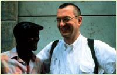
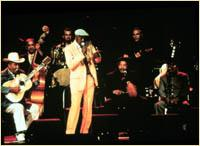

1. Что послужило первопричиной желания сделать фильм об этих кубинских музыкантах? Вы услышали альбом или это проект энтузиазма Ry Cooder?

Безграничный энтузиазм Ry и его отчаянное желание вернуться в Гавану как можно скорее возбудили у меня интерес. Ry и я вместе работали над музыкой к фильму END OF VIOLENCE, в Los Angeles. Он только что вернулся с Кубы после записи Buena Vista Social Club и дал мне кассету с еще сырым миксом. Меня сразу зацепила эта музыка и кончилось тем, что я слушал ее каждый день, месяцами. Так что, когда я видел зеркальный взгляд в глазах Ry и он выпадал из времени, я понимал, что он сейчас находится в Гаване. Он рассказал мне все эти невероятные истории про Ruben, Compay и Ibrahim, и принес мне книги и фотографии с Кубы. Так что в конце концов я сказал ему: "Дай мне знать, когда ты поедешь туда снова и поеду с тобой". И два года спустя мы так и сделали, когда он поехал записывать сольный альбом Ibrahim Ferrer.2. Что вас привлекло больше - прекрасная история о возрождении таких людей, как Ruben Gonzalez и Ibrahim Ferrer, или дело было целиком в музыке?
Я не смог бы разделить их жизни и их историю от их музыки. Такая музыка настолько эмоциональна и насыщена и настолько полна историями их жизни, что практически невозможно их разделить.
3. Музыка всегда играет большую роль в фильме Wim Wenders. Когда вы впервые услышали альбом Buena Vista, На что особенно вы обратили внимание?
Что пробрало меня насквозь, когда я слушал альбом впервые, еще даже не представляя, что это за люди, это чувство легкости, общей радости и непринужденности. И было еще глубоко ощущаемое чувство опыта и честности, как не в одной другой музыке, что я знал.
4. Вы работали с другими музыкантами, включая U2 и Nick Cave, и я думаю вас рассматривали как рок-журналиста. Какую роль музыка играет в вашей жизни в качестве создателя фильмов?
Музыка - это постоянный источник вдохновения и энергии. И моя любимая часть в процессе создания фильма тот бесценный момент, когда вы видите первое свидание звука и изображения. Какие бы лишения, боль и проблемы вам не пришлось пройти во время с'емки этого кадра: этот момент делает все это стоящим.
5. Какой особой техники или подхода требует фильм о музыке? Вероятно, создание такого рода фильма сильно отличается от создания, к примеру, Wings of Desire или End of Violence?
Это так, конечно. Но это также отличается от создания "просто документального фильма". Ruben, Ibrahim, Compay, Pio, Omara и Eliades становились все более и более похожими на придуманные персонажи, и когда мы окончательно прибыли в Нью-Йорк, это выглядело так, что мы действительно рассказали историю и закончили круг повествования. Я снимал полнометражную документалистику, как "Tokyo-Ga" и 'Notebook on Cities and Clothes", но эти работы были скорее очень личными дневниками. В "Buena Vista Social Club" я скорее старался остаться об'ективным обозревателем настолько, насколько это возможно. "Техника"? Мы снимали на Digi-Beta и почти целиком на Steadicam, который придал изображению потрясающую текучесть и непосредственность. И "подход" был прост: постараться воздать должное этим потрясающим людям и оставить музыку говорить саму за себя. Но я не думаю, что "техника" или "подход" определяют фильм. Что имеет значение, на самом деле, это отношение людей за камерой к тем, кто стоит перед ней. И я надеюсь, что камера показала, как мы любили их и также надеюсь, что мы не злоупотребили их скромностью и щедростью.
6. Вы впервые работали с Ry в 1984 на Paris, Texas. Почему вы двое так долго после этого не работали вместе (до Buena Vista и The End of Violence)?
Paris, Texas был настолько удивительным опытом, в котором образы и музыка дополнили друг друга совершенно, что я был напуган тем, что в будущем мне придется хоронить прекрасные вещи, пытаясь повторить это. Но затем прошло 12 лет, показавшиеся долгим достаточно пробелом и периодом ожидания. Мне кажется, мы оба были более, чем счастливы снова работать вместе.
7. Есть ли какие-нибудь технические и производственные трудности в работе на Кубе?
Мы получили помощь от ICAIC, правительственного совета по кино. Конечно, оборудование - это проблема, потому что все уже устарело и не очень хорошо хранилось. Кубинцы сильно страдают во всех аспектах их повседневной жизни, от отсутствия финансов, запасных частей и большинства основных вещей из-за устаревшего анахронизма - эмбарго, - который продолжает действовать в отношении их.
8. Почему вы назвали это документальным фильмом?
Потому что это то, на что он похож больше всего - фильм о музыке, в котором картинки и звуки неподражаемо залинкованы.
Это вы так сказали. Так что давайте назовем это "музыкаментальный".
9. Вы начали с подготовительного периода к фильму или все само развивалось органично, как только вы прибыли на Кубу?
Я никогда до этого не был на Кубе! Но, конечно, у меня была какая-то концепция, как снять и как обставить определенные идеи, но как только мы прибыли туда, все это очень быстро усохло. Мы вместе с Jörg - главным оператором - просто работали день за днем, открывая места и участки, когда проходили мимо них.
10. Как вы предусмотрели концертные с'емки, вставленные в с'емки на Кубе?

В то время, когда шли с'емки в Гаване, мы уже знали, что в апреле надо добраться до Амстердама и снять один из концертов, который группа собиралась когда-либо давать. Так что мы сконцентрировались на новом альбоме и новых песнях, которые Ry, Nick, Jerry и Juan de Marco записывали в студии EGREM, c тем же составом музыкантов, но с Ibrahim в качестве ведущего певца. И мы старались проводить время со всеми вместе или отдельными участниками группы. Мы знали, что у нас будет шанс записать все песни из альбома Buena Vista Social Club в Амстердаме, и у меня была неясная идея, как мы сможем переплести два различных элемента. Мы все не могли вообразить, что из-за феноменального успеха альбома и легендарного статуса концертов в Амстердаме, который они сразу приобретут, у группы появится возможность дать еще один - и последний - концерт в Carnegie Hall в Нью-Йорке. Когда это стало реальностью - а какое-то время концерт в Нью-Йорке был под большим сомнением, - я просто знал, что нам придется идти и снимать там тоже. Казалось, что только включив Нью-Йорк, мы сможем замкнуть круг. Это означало, что нам пришлось отказаться от другого материала, и поскольку я не хотел жертвовать кубинскими с'емками, мы решили не включать репетиций в Амстердаме, которые составляли около двадцати часов материала. Мы ведь вернулись с Кубы почти с 50 отснятыми часами!
11. Такие люди, как Ruben и Ibrahim кажутся обладают врожденным чувством грации и уравновешенности. Насколько тяжело было ухватить это в фильме?
Равновесие всего лишь слово. У нас были проблемы с тем, как сдержать их энергию и все, что нам приходилось делать, это иногда их сдерживать. С другой стороны, они всегда были сама естественность, элегантность, изящность, веселье и скромность.
12. Фильм целиком кажется очень естественным. Что вы можете сказать о балансе между подходом "снимаю, что вижу" и роли режиссера в выстраивании нужного ?
Неподвижная камера иногда требует много работы по выстраиванию кадра, но я снимал и сам на свои небольшие DV-камеры, Jörg большую часть снимал, полагаясь на собственный инстинкт. И он делал невероятное. Мы балансировали от одного к другому, как вы сказали, большую часть времени.
13. Какова была роль Ry в фильме (в противоположность роли в музыке)? Он, понятно, был там вместе с музыкантами, но сыграл ли он важную роль, помогая вам подобрать нужную музыку под конкретное изображение?
Очень немного музыки в фильме, которую мы не видим исполняемой напрямую. В Гаване Ry был настолько глубоко погружен в музыку как продюсер, что было гораздо легче снять любого другого музыканта, нежели его. Я был счастлив, когда он взял перерыв на полдня и мы отсняли кусок, когда он едет на мотоцикле и когда мы забрали его и Ibrahim в Regla. Кроме этого он делал нарезки из отобранного для него и не был сильно вовлечен в процесс с'емок. И через какое-то время, когда он понял, что фильм составлял слишком большую часть постоянной неразберихи в студии, и он попросил меня оставить их одних на какое-то время, так чтобы они могли больше сконцентрироваться на записи. Мне пришлось это принять, конечно. Ry принял гораздо большее участие позже, в процессе монтажа. К примеру, он сам микшировал все концертные куски и он сделал важный вклад в финальную нарезку, включавшую его закадровый текст.
14. Вы надеетесь, что люди смогут извлечь из фильма что-то, что они не смогли получить из записи?
Я действительно надеюсь, что больше людей узнают об этой потрясающей музыке благодаря нашему фильму. И я надеюсь, что те, кто уже знают и любят альбом Buena Vista, откроют для себя музыкантов и смогут получить представление об этой потрясающе богатой культуре. Куба не похожа на любое другое место этой планеты, но вскоре все это будет интернализировано, американизировано или выровнено, чтобы стать частью глобальной культуры. Той, которой еще не существует.
15. Ry описывал создание Buena Vista Social Club как величайший музыкальный опыт своей жизни. Испытываете ли вы подобные чувства относительно фильма?
Во время с'емок Ry и кубинцев, я мог легко видеть, насколько это утверждение было точно для него. Я и сам не делал никогда ничего подобного. Я никогда не был настолько близко вовлечен в процесс записи, и я никогда не снимал концерт целиком до этого опыта.
16. Ry описывал вас как "серьезного музыкального парня". Не могли бы вы рассказать нам немного о вашем собственном музыкальном росте и вкусах?
Я сам не играю музыку, я только играю записи. Хотя я учился играть на кларнете и саксофоне когда-то. Это не зашло далеко, и мой саксофон окончил свои дни в ломбарде. Но я коллекционирую записи и компакты и слушаю много музыки. И я настоящий фан альбомов со звуковыми дорожками к некоторым моим фильмам, особенно PARIS, TEXAS (с Ry) или UNTIL THE END OF THE WORLD (c U2, LouReed, Peter Gabriel и многими другими). AINDA (c Madreus) или END OF VIOLENCE (снова с Ry, но также и с US, Michael Stipe, the Eels и другими). Мне нравится много разной музыки - классическая, Blues, Jazz и World Music,- хотя мои "корни" определенно в английской рок-сцене 60х, Kinks, Van Morrison and Them, The Pretty Things, Yardbirds, Stones и Beatles.
17. Есть ли какие-нибудь особые проблемы у режиссера, снимающего фильм о музыке?
Не думаю, что я столкнулся с проблемами. Я чувствовал себя избранным, находясь с ними.
18. Не могли бы вы нам рассказать о характерах участников Buena Vista - таких, к примеру, как Ibrahim, Ruben и Omara? Мне они кажутся воплощением мечты режиссера, - наверно, невозможно найти более интересных людей.
Это правда. Ruben, к примеру, такой забавный персонаж. Ry описал его как гибрид Кота Феликса и Thelonius Monk, и так оно и есть. Pio для меня был как Groucho Marx. Я хотел бы снять фильм с Omara в какой-нибудь придуманной роли - я уверен, она будет великолепна. И Compay, который настолько "больше, чем жизнь" в свои 90 лет, с никогда не кончающейся энергией и потрясающим самообладанием.
19. Они чувствовали себя естественно перед камерой?
Oh,boy! Когда бы одна из наших камер не начинала вращаться, они конечно понимали это, но без всякой неестественной игры и демонстрирования себя. Они просто продолжали делать то, чтобы и так делали, разве что с чуть большей энергией.
20. Есть ли проблемы в с'емках фильма целиком на Кубе?
Электричество не всегда стабильно. И сложно организовать питание с'емочной группы, потому что пища - эта из печальных проблем кубинцев сегодня.
21. Есть ли у вас какой-то любимый момент или кадр в фильме? Некое мгновение, когда вы чувствуете себя захваченным душой музыки или музыкантами в одном кадре или сюжете?
В конце Dos Gardenias, на концерте в Амстердаме, когда Omara начинает плакать и Ibrahim очень деликатно смахивает ее слезы.